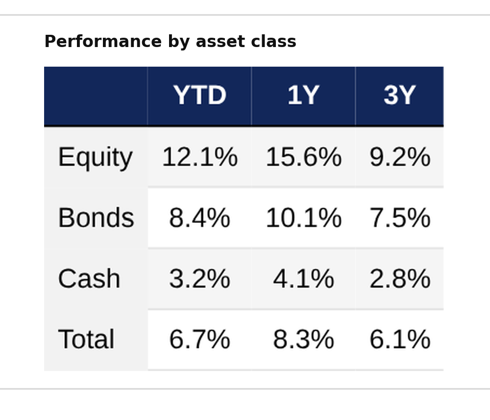
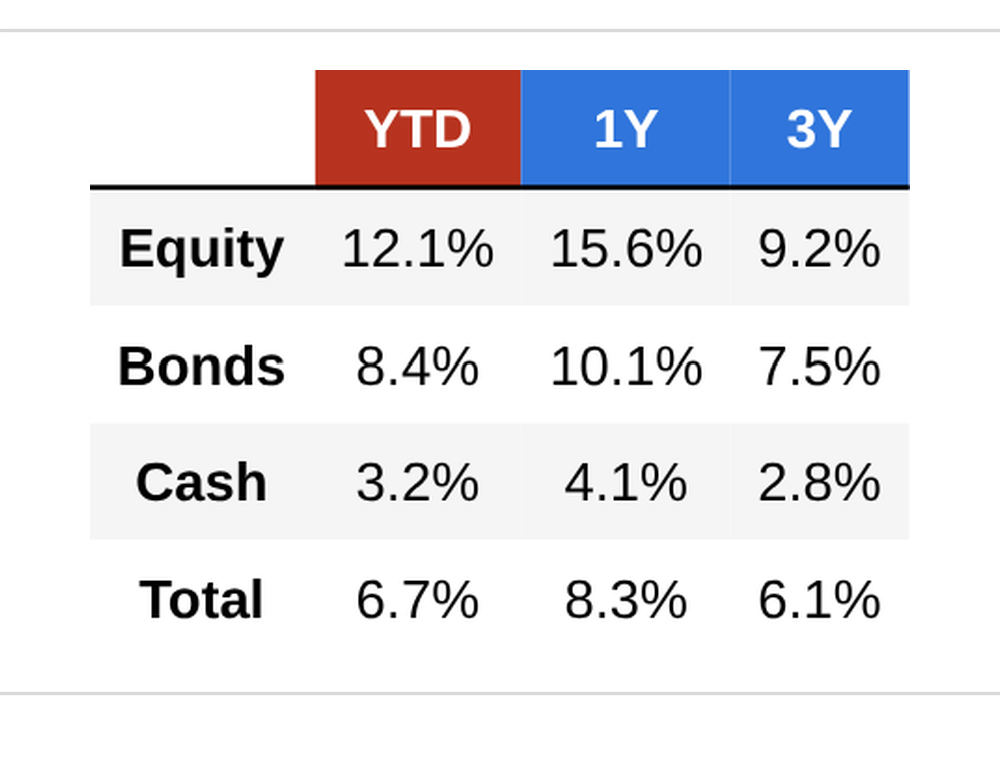
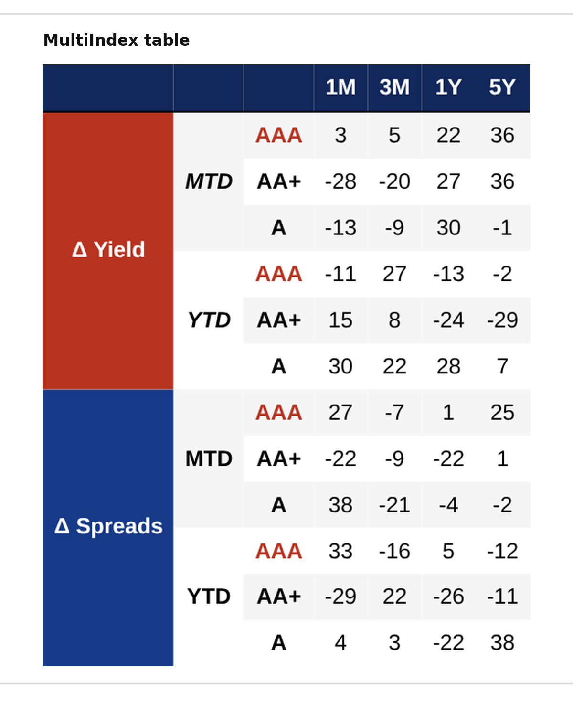
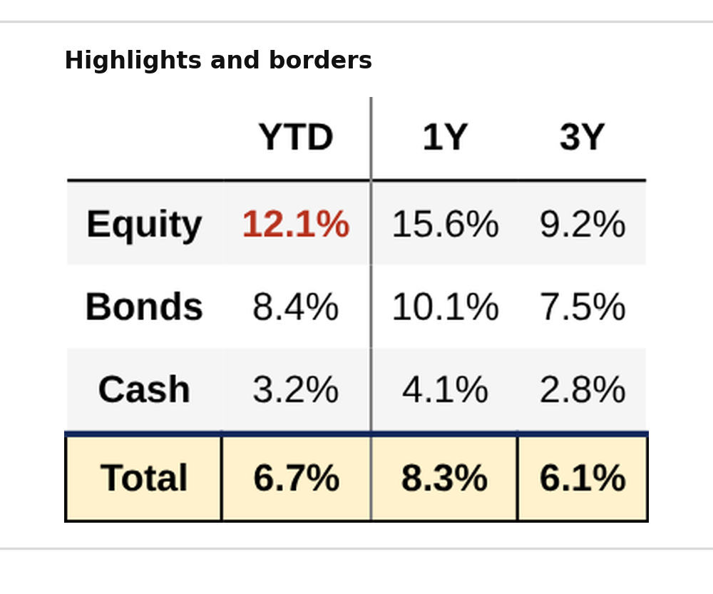
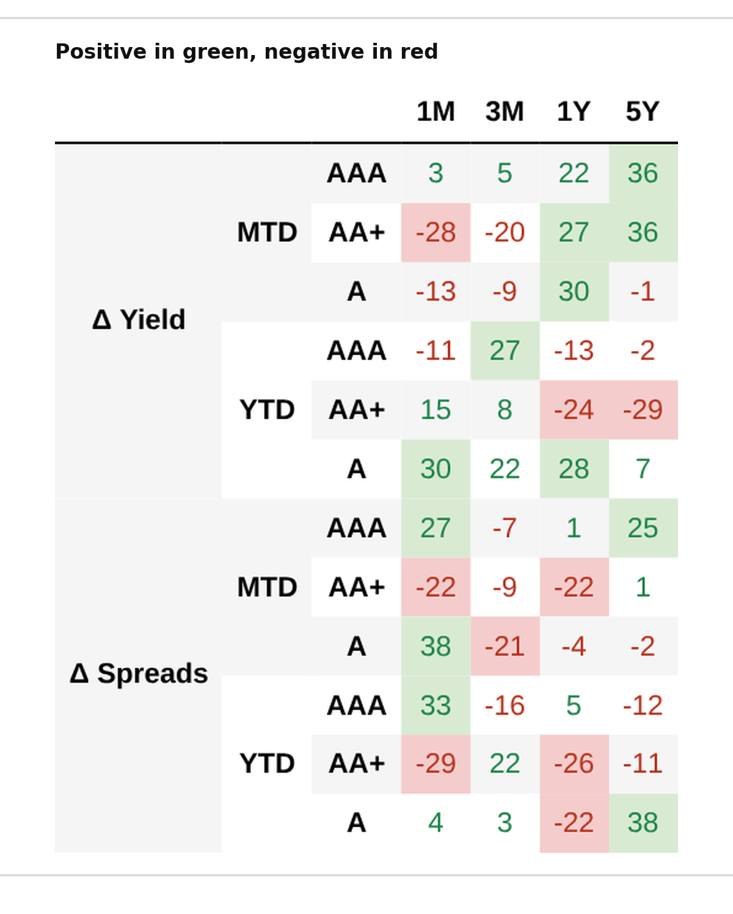

Styling tables¶
Every styling method of TableSheet acts on the active panel(s) (the most recently added one by default; see on()). Calls are recorded in the order you write them and replayed to build the final table, so the latest call wins when two rules set the same CSS property.
All style arguments are plain CSS properties in dictionaries: {"background-color": "#12275A", "color": "white", "font-weight": "bold"}.
The examples use two tables. A simple one and a MultiIndex one with the index levels Metric, Period and Rating.
import numpy as np
import pandas as pd
import helpers_ps as hp
TableSheet = hp.DfStyling.TableSheet
simple = pd.DataFrame(
{
"YTD": [0.121, 0.084, 0.032, 0.067],
"1Y": [0.156, 0.101, 0.041, 0.083],
"3Y": [0.092, 0.075, 0.028, 0.061],
},
index=["Equity", "Bonds", "Cash", "Total"],
)
index = pd.MultiIndex.from_product(
[["Δ Yield", "Δ Spreads"], ["MTD", "YTD"], ["AAA", "AA+", "A"]],
names=["Metric", "Period", "Rating"],
)
rng = np.random.default_rng(1)
multi = pd.DataFrame(
rng.integers(-30, 40, size=(len(index), 4)),
index=index,
columns=["1M", "3M", "1Y", "5Y"],
)
style_table: the general look¶
One call sets typography, colors and the style of headers, index and data cells. Every argument is optional.
| Argument | Applies to | Example |
|---|---|---|
font_family, font_size, text_color, background_color, text_align |
header, index and data cells | font_size=11, text_align="center" |
header_styles |
all column-header cells | {"color": "white", "background-color": "#12275A"} |
index_styles |
all row-index cells (every level) | {"background-color": "#F2F2F2", "font-weight": "normal"} |
data_styles |
all data cells | {"border-bottom": "1px solid #E5E5E5"} |
column_header_styles |
selected headers | list of {"columns": [...], "styles": {...}, "level": n} |
row_index_styles |
selected index labels | list of {"values": [...], "level": n or name, "styles": {...}, "parent": (...)} |
corner_styles |
the corner above the index and the index-names row | {"background-color": "#12275A"} |
show_index_names |
the row with the index level names | False hides it |
font_size is in pixels when numeric (11 = "11px") or any CSS unit as text ("9pt").
sheet = (
TableSheet(simple, width_in=5)
.style_table(
font_size=12,
text_align="center",
header_styles={"color": "white", "background-color": "#12275A"},
corner_styles={"background-color": "#12275A"},
index_styles={"background-color": "#F2F2F2", "font-weight": "normal", "text-align": "left"},
data_styles={"border-bottom": "1px solid #E5E5E5"},
)
.format("{:.1%}")
.panel(title="Performance by asset class")
)

Order of rules inside one call (the later one wins on the same property): (1) general arguments, (2) header_styles / index_styles / data_styles, (3) column_header_styles, (4) row_index_styles, (5) corner_styles.
Why the font size barely changes the image
With the default scale="uniform" the table is resized to fill its cell, so font_size mostly changes how heavy fixed-pixel borders look relative to the text. See scale.
Header and row heights
A row is as tall as its tallest cell. If you reduce the padding of the header cells, give corner_styles the same padding; if you reduce the data padding, reduce the index padding too: data_styles={"padding": "0.25em 0.6em"}, index_styles={"padding": "0.25em 0.6em"}.
Number formats: format¶
format(formatter=None, subset=None, **kwargs) wraps Styler.format.
sheet.format("{:.1%}") # every cell
sheet.format({"YTD": "{:.1%}", "1Y": "{:.1%}"}) # per column
sheet.format(lambda v: f"{v:+,.0f} bp", subset=["1M"]) # a function
sheet.format("{:.1f}", na_rep="-") # any Styler.format option
Targeted rules¶
Selected headers: column_header_styles¶
Each rule is a dictionary with "columns" (a label or a list), "styles" and an optional "level" (the header row; default is the last one, the row closest to the data).
sheet = (
TableSheet(simple, width_in=5)
.style_table(
text_align="center",
header_styles={"color": "white", "background-color": "#12275A"},
column_header_styles=[
{"columns": ["YTD"], "styles": {"background-color": "#B7331F"}},
{"columns": ["1Y", "3Y"], "styles": {"background-color": "#3075DB"}},
],
)
.format("{:.1%}")
)

Selected index labels: row_index_styles¶
Each rule has "values" (a label or list), "level" (position, 0 = outermost, or the level name) and "styles". "parent" (a tuple of the outer-level values) restricts a repeated label to one section.
sheet = (
TableSheet(multi, width_in=6)
.style_table(
font_size=11,
text_align="center",
header_styles={"color": "white", "background-color": "#12275A"},
corner_styles={"background-color": "#12275A"},
row_index_styles=[
{"values": "Δ Yield", "level": 0, "styles": {"background-color": "#B7331F", "color": "white"}},
{"values": "Δ Spreads", "level": 0, "styles": {"background-color": "#163A87", "color": "white"}},
{"values": ["MTD", "YTD"], "level": 1, "parent": ("Δ Yield",), "styles": {"font-style": "italic"}},
{"values": "AAA", "level": "Rating", "styles": {"color": "#B7331F"}},
],
show_index_names=False,
)
.panel(title="MultiIndex table")
)

MultiIndex columns
With MultiIndex columns use complete tuples as labels (("Yield", "1M")). To style a group label of an upper level, use "level": 0 and list the group's columns starting with its first column (the one that carries the label).
Values that do not exist
A label that is not in the table matches nothing and is ignored silently.
Table outline and header line¶
By default a table has no outline and a 1px black line under the column headers.
| Method | What it does |
|---|---|
table_border(width="1px", color="#cccccc", line_style="solid") |
Draws an outline. line_style="none" removes it. |
header_line(width="1px", color="black", line_style="solid") |
Style of the line between headers and data (line_style="none" removes it). |
Line thickness
The browser draws table borders in whole CSS pixels with a minimum of 1px ("0.5px" is drawn as 1px, "1.5px" as 1px). Because the sheet scales the table to fit its cell, the visible thickness is relative to the text: a 1px line is thinner next to a large font_size. To get thinner lines, increase font_size; to keep other sizes proportional use em units inside the table.
Cells, rows and columns¶
These methods mirror the functional API. Labels are row index values and column names; for a MultiIndex use complete tuples.
| Method | Description |
|---|---|
style_cell(row, column, styles) |
CSS on one cell. |
style_cells(rows, columns, styles) |
CSS on every combination of the given rows and columns. |
border_cell(row, column, position="top", width="1px", color="black", line_style="solid") |
Border on one side of one cell. |
border_cells(rows, columns, position=..., ...) |
Border on one side of many cells. |
highlight_rows(rows, styles=None, include_index=True, index_level=None) |
Highlight whole rows. Default style: bold text and a 1px black box. |
highlight_columns(columns, styles=None, include_header=True, header_level=None) |
Highlight whole columns. |
border_rows(rows, position="bottom", styles=None) |
Horizontal line across the complete row (also across merged MultiIndex cells). styles accepts width, style (or line_style) and color. |
border_columns(columns, position="right", include_header=True, header_level=None, styles=None) |
Vertical line next to columns. |
sheet = (
TableSheet(simple, width_in=5)
.style_table(font_size=12, text_align="center")
.format("{:.1%}")
.highlight_rows("Total", styles={"background-color": "#FFF2CC"})
.border_rows("Cash", position="bottom", styles={"width": "2px", "color": "#12275A"})
.style_cell("Equity", "YTD", {"color": "#B7331F", "font-weight": "bold"})
.border_columns("YTD", position="right", styles={"color": "#808080", "width": "1px"})
.panel(title="Highlights and borders")
)

row_index_styles vs highlight_rows
row_index_styles paints only the index label. To style the data cells of a row use highlight_rows or style_cells.
Conditional colors¶
text_color_by_range(ranges, subset=None) and background_color_by_range(ranges, subset=None) color each cell by the numeric interval it falls in. ranges is {(lower, upper): css_color}; the interval is lower-inclusive and upper-exclusive and the first match wins. subset limits the cells (use pd.IndexSlice for MultiIndex).
sheet = (
TableSheet(multi, width_in=6)
.style_table(font_size=11, text_align="center", show_index_names=False)
.text_color_by_range({(-np.inf, 0): "#B7331F", (0, np.inf): "#1E8449"})
.background_color_by_range({(25, np.inf): "#D9EAD3", (-np.inf, -20): "#F4CCCC"})
.panel(title="Positive in green, negative in red")
)

Any Styler operation: apply_styler¶
apply_styler(func, *args, **kwargs) runs any Styler method by name, or your own function func(styler, ...) -> Styler, and records it in the recipe:
sheet.apply_styler("background_gradient", cmap="Blues", axis=None)
sheet.apply_styler(lambda s: s.set_caption("Daily changes"))
sheet.apply_styler("hide", axis="columns", subset=["5Y"])
Several tables, different styles¶
Use on(...) to choose which panels the next call affects. With no arguments it selects all panels:
sheet = (
TableSheet({"yield": df_yield, "spreads": df_spreads}, width_in=12)
.on().style_table(font_size=11, text_align="center") # both
.on("yield").format("{:+.0f}") # only yield
.on("spreads").format("{:.1f}") # only spreads
)
See Panels, charts and layout.
Inspecting and resetting styles¶
| Method | Description |
|---|---|
recipe (property) |
Dictionary {panel_name: [operation labels]} in the order they will be applied. Use it to debug the order of rules. |
clear_styles() |
Remove every recorded operation from the active tables. |
sheet = TableSheet(simple).style_table(font_size=11).format("{:.1%}").highlight_rows("Total")
sheet.recipe
<bound method StylingMixin.recipe of TableSheet(panels=['panel_0'], active=['panel_0'], stacked, width_in=8.0)>
A wrong label fails immediately on the offending line (not when rendering), which makes mistakes easy to find.